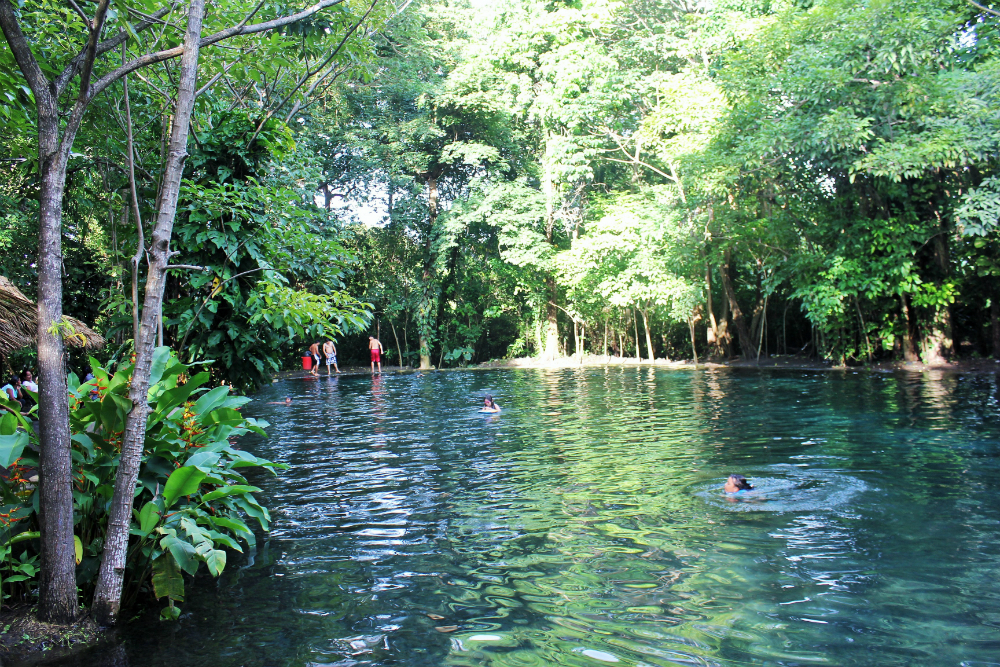
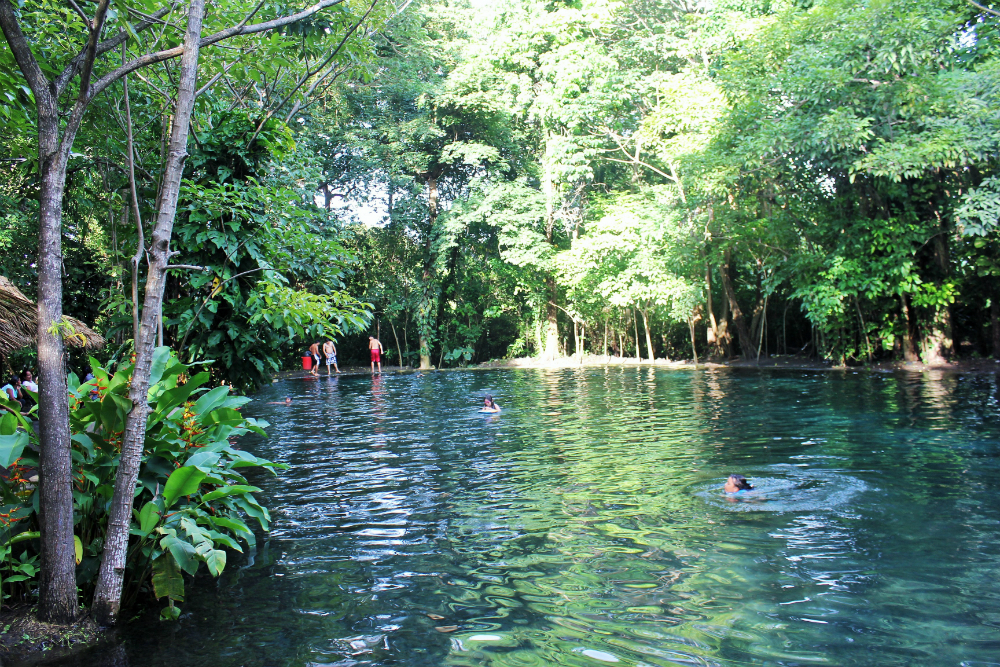

Bienvenido a la Isla de Ometepe
Dos volcanes, un paraíso. Explora sus maravillas naturales y culturales.
 



Bienvenidos a Ometepe
Dato Curioso: La isla de Ometepe es la única isla del mundo con dos volcanes dentro de un mismo lago de agua dulce
Hoteles y Restaurantes
Alojamiento
Desde hostales económicos hasta lodges de lujo, encuentra tu lugar ideal para descansar después de la aventura.
Gastronomía Local
Prueba el pescado frito fresco, el vigorón y los deliciosos platos típicos nicaragüenses.
Renta de Vehículos y Motocicletas
Motos (Recomendado)
Perfectas para acceder a todos los rincones de Ometepe. Asegúrate de tener licencia.
Contacto: Rentas "El Veloz" | Tel: 5797-3164
Automóviles (4x4 Sugerido)
Necesario para grupos grandes o mayor comodidad, especialmente en la temporada de lluvia.
Contacto: Ometepe Car Rental | info@rentaometepe.com
Ferrys: Moyogalpa - San Jorge
Proceso de Reservación y Compra
- Llega al puerto de San Jorge o Moyogalpa una hora antes.
- Compra boletos en taquilla (pasajeros o vehículos).
- Presenta matrícula y licencia si llevas vehículo.
- Embarque: primero vehículos, luego pasajeros.
- Duración: entre 1h y 1h 30m.
TIP: Los horarios varían. Consulta cartelera al llegar al puerto.
Lo que No Te Puedes Perder
Punta Jesús María
Un estrecho istmo de arena con vistas inigualables de los volcanes.

Reserva Charco Verde
Laguna esmeralda ideal para observar monos, aves y disfrutar la naturaleza.
Ubicación Geográfica de Ometepe
Contáctanos
Información de Contacto
Teléfono: +505 5821-5395
Email: info@dosvolcanes.com
Dirección: Moyogalpa, Isla de Ometepe